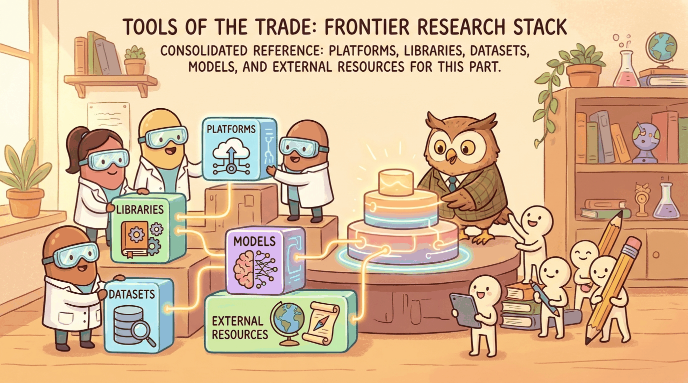

"The frontier is the part of the map that is currently being drawn. The tools listed here will not survive the decade."
Author's notebook
Part XII looked at the frontiers: where research is headed, where the open questions are, and what the next decade of LLM work might look like. This chapter is the toolbox for staying current: the paper firehose (arXiv, Papers with Code), the lab publications (Anthropic, OpenAI, EleutherAI, Nous, Stability), and the live evaluation tracking (LMArena, Artificial Analysis).
For the minimum information diet:
pip install arxivThe arxiv Python client plus a daily reading hour is the closest thing to a frontier-tracking habit that has held up since 2018. Complement with Hugging Face Papers for curation.
Sections in This Chapter
- 86.1 Platforms A chapter from the Building Conversational AI textbook.
- 86.2 Libraries & Frameworks A chapter from the Building Conversational AI textbook.
- 86.3 Datasets & Benchmarks A chapter from the Building Conversational AI textbook.
- 86.4 Models A chapter from the Building Conversational AI textbook.
- 86.5 External Reading & Communities A chapter from the Building Conversational AI textbook.
What Comes Next
This is the final chapter. After Section 86.5, you have finished the book. The appendices remain as reference material; Appendix index lists them all.